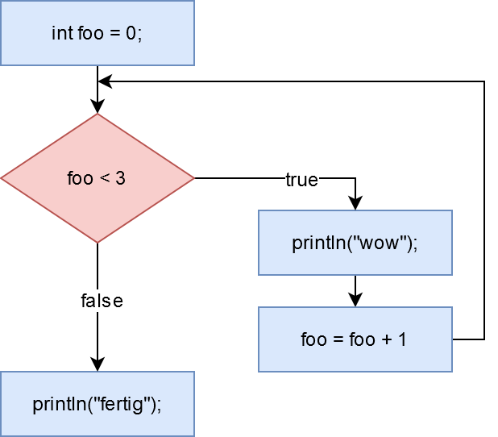

Wir wissen bereits, dass eine If-Anweisung den Kontrollfluss eines Programms ändert. Statt Zeile für Zeile abzuarbeiten, kann dein Programm Zeilen überspringen oder auch nicht, je nachdem ob eine bestimmt Bedingung erfüllt ist oder nicht. Eine while-Schleife hat große Ähnlichkeit mit einer If-Anweisung. Auch hier wird der Kontrollfluss verändert, aber anstatt Zeilen zu überspringen, kannst du die Ausführung von Zeilen mehrfach wiederholen. Das ist so, wie in der draw() Funktion - die wiederholt deinen Code auch solange, bis du ein Stopsignal gibst. Daher ist die draw() Funktion eine while-Schleife.
While-Schleife
Nehmen wir an, du willst etwas ausgeben unter der Bedingung, dass die Variable foo kleiner als 3 ist:
int foo = 0;
if (foo < 3) {
println("wow");
}
Hier wird ein Mal "wow" ausgegeben. Wenn du statt "if" "while" schreibst, wiederholt Processing den Code so lange, wie die Variable foo kleiner als 3 ist.
int foo = 0;
// das kann dauern...
while (foo < 3) {
println("wow");
}Da sich foo nicht ändert, läuft die Schleife unendlich lang. Nicht gut. Man nennt das eine Endlosschleife. Auch ein beliebter Anfängerfehler. Die Lösung ist, foo bei jedem Durchlauf des Code-Blocks zu ändern.
int foo = 0;
// ein Ende ist in Sicht :)
while (foo < 3) {
println("wow");
foo = foo + 1;
}
Jetzt wird der Code-Block drei Mal durchlaufen. Bei ersten Mal ist foo gleich 0, also wird der Block durchlaufen. Beim zweiten Mal ist foo gleich 1, also wieder durch den Block. Beim dritten Mal ist foo gleich 2, also nochmal. Erst beim vierten Mal ist die Bedingung hinter while nicht mehr erfüllt und der Code-Block wird nicht mehr ausgeführt. Es geht weiter hinter der schließenden geschweiften Klammer.
Nach der While-Schleife geht es wieder regulär weiter im Code. Wir zeigen das, indem wir eine Anweisung anhängen. Diese wird immer ausgeführt:
int foo = 0;
while (foo < 3) {
println("wow");
foo = foo + 1;
}
println("fertig");Tabelle
Man kann sich die Verarbeitung einer Schleife gut mit Hilfe einer Tabelle verdeutlichen. In der Tabelle trägt man die Entwicklung des Werts der Laufvariablen ein (hier: foo). In einer weiteren Spalte sieht man, ob die Bedingung (foo < 3) für den jeweiligen Wert erfüllt ist oder nicht. In der letzten Spalte sehen wir die Schleifenaktion, die den Wert von foo erhöht.
| Durchlauf | foo | foo < 3 | Aktion |
| 1 | 0 | true | foo = 1 |
| 2 | 1 | true | foo = 2 |
| 3 | 2 | true | foo = 3 |
| 4 | 3 | false | --- |
Tabellen sind immer dann hilfreich, wenn die Entwicklung der Laufvariablen komplizierter wird (rückwärts, andere Schrittweite) oder wenn weitere Variablen in Abhängigkeit von der Laufvariablen gesetzt werden sollen.
Programmablaufplan
Ähnlich wie bei der If-Anweisung, können wir den Kontrollfluss mit Hilfe eines Programmablaufplan visualisieren:

Der Programmablaufplan ist fast identisch mit dem der If-Anweisung. Der einzige Unterschied ist, dass hier im true-Zweig ein Pfeil zurück zur Bedingung weist und damit Wiederholungen ermöglicht.
Begriffe
Die allgemeine Form der While-Schleife kann man so formulieren:
while (BEDINGUNG)
ANWEISUNGDie BEDINGUNG nennt man auch die Schleifenbedingung. Nur wenn diese Bedingung erfüllt ist, wird der Code in der Schleife ausgeführt (ähnlich wie beim If). Das Gegenteil der Schleifenbedingung (die logische Negation) nennt man Abbruchbedingung. In unserem Beispiel ist die Abbruchbedingung, dass foo größer-gleich 3 ist. Ein häufiger Fehler ist, dass statt der Schleifenbedingung die Abbruchbedingung eingesetzt wird.
Eine Variable, die hochgezählt (oder runtergezählt) wird und Teil der Schleifenbedingung ist, nennt man Laufvariable. Die Tatsache, dass die Laufvariable hochgezählt wird, nennt man auch die Schleifenaktion. Diese ist besonders wichtig, weil man sie leicht vergisst, was wiederum zur Folge hat, dass die Schleife nie abbricht (Endlosschleife) und dein Programm evtl. abstürzt.
Die ANWEISUNG in der allgemeinen Form der while-Schleife ist in der Regel ein Code-Block, d.h. eine oder mehr Zeilen Code, die von geschweiften Klammern umgeben sind.
Hier nochmal die Begriffe im Code:
int foo = 0; // Initialisierung der Laufvariable
while (foo < 3) { // Schleifenbedingung
println("wow");
foo = foo + 1; // Schleifenaktion
}
println("fertig");Coding Style
Bitte achte darauf, wo Leerzeichen und Zeilenumbrüche gemacht werden, und wo nicht.
while (i < 3) {
println(i);
i++;
}Denk auch daran, deinen Code mit Bearbeiten > Autoformatierung von Processing korrekt einrücken zu lassen (Tastenkürzel STRG+T bzw. CMD+T).
Do-While-Schleifen
While-Schleifen führen den Code innerhalb der Klammern nur aus, wenn die Bedingung erfüllt ist. Bevor irgendein Code ausgeführt wird, wird die Bedingung überprüft. Dies kann ich als Programmierer aber auch umdrehen. Sprich, es soll erst der Code ausgeführt werden und danach soll erst überprüft werden, ob die Bedingung immer noch zutrifft. Diese Schleifen nennt man Do-While-Schleifen, weil sie erstmal etwas "tun" bevor sie überprüfen.
Der Aufbau einer Do-While-Schleife ist folgendermaßen:
do
ANWEISUNG
while(BEDINGUNG)
Kopf und Fuß
Der Unterschied der beiden Schleifen ist, wo die Überprüfung oder auch "Steuerung" stattfindet.
- Bei der While-Schleife ist die Überprüfung oben, bzw. "im Kopf" der Schleife. Das wird auch als kopfgesteuert bezeichnet.
- Bei der Do-While-Schleife findet die Überprüfung unten oder auch "im Fuß" der Schleife statt. Das wird auch als fußgesteuert bezeichnet.
Ein Einsatzgebiet von Do-While-Schleifen ist, wenn Code auf jeden Fall mind. einmal ausgeführt werden soll. Stell dir einen Raum mit 10 Personen vor und dein Programm soll eine bestimmte Person finden. Nennen wir sie "Franka". Dein Programm geht also zu einer Person, fragt, ob sie Franka ist, überprüft die Antwort (Ja/Nein) und entscheidet dann, ob es noch weitere Personen fragen muss oder ob Franka gefunden wurde.
- Dabei wird auf jeden Fall mind. eine Person gefragt
- Es findet erst die ANWEISUNG (Person fragen) statt und dann die Überprüfung der BEDINGUNG (Franka gefunden?)
Zusammenfassung
Eine While-Schleife ist eine kopfgesteuerte Schleife. Das bedeutet, dass zu Beginn der Schleife eine Bedingung überprüft wird und wenn bzw. solange diese wahr ist, wird die Anweisung in der Schleife durchgeführt.
while (BEDINGUNG)
ANWEISUNGEine Do-While-Schleife ist eine fußgesteuerte Schleife. Bei ihr findet die Überprüfung am Ende statt. Die Anweisungen innerhalb einer Do-While-Schleife werden somit mind. einmal durchgeführt.
do
ANWEISUNG
while(BEDINGUNG)